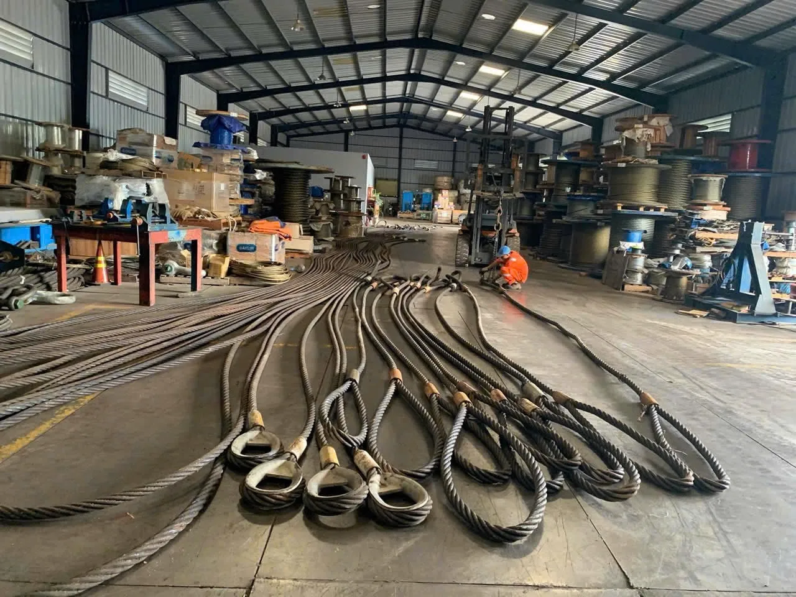
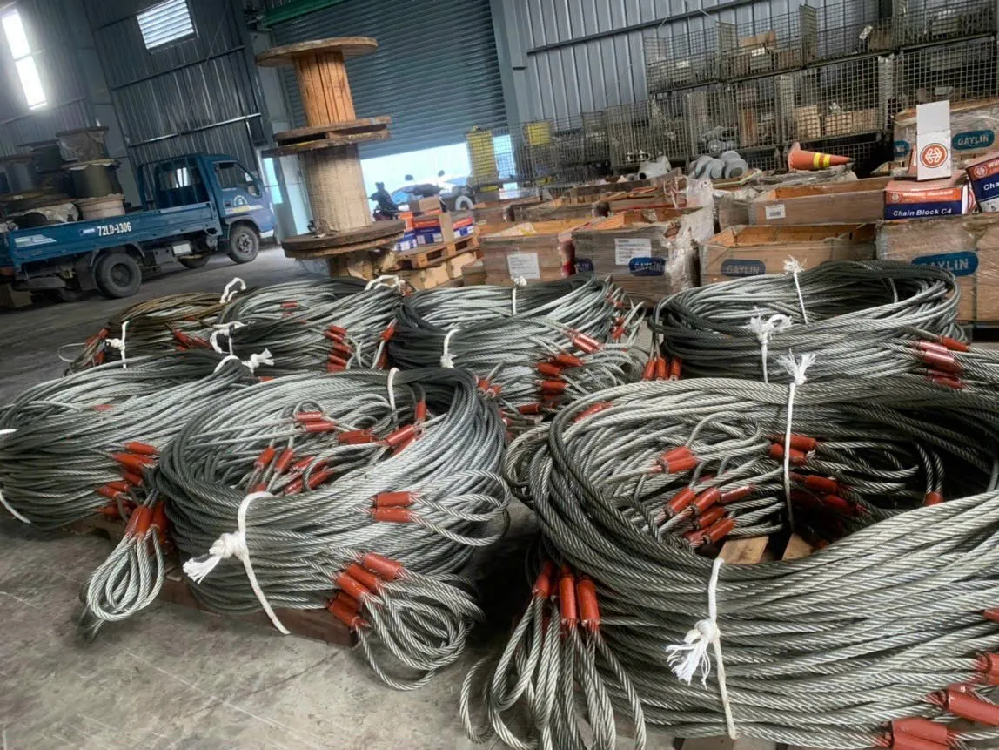
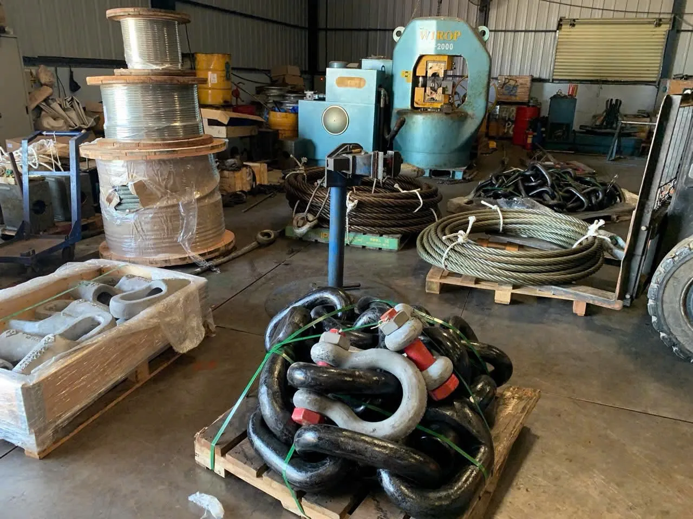

Wire rope · IWRC · Rotation resistant
Cáp thép (Wire Rope) cho cẩu, tời, offshore và dầu khí
Cáp thép lõi thép IWRC, cáp chống xoắn, cáp tao ép cường độ cao, cáp mạ kẽm – đầy đủ chứng chỉ, cắt và cuốn theo chiều dài, giao nhanh tại Vũng Tàu, TP. Hồ Chí Minh và toàn quốc.
Wire rope
Cáp thép chịu lực cho cẩu, tời, neo và nâng hạ

Cáp thép (wire rope) là sản phẩm chủ lực của Công Ty TNHH Amos Việt Nam. Chúng tôi cung cấp cáp thép cho cẩu offshore, cẩu cảng, tời neo, giàn khoan dầu khí, tàu biển và các ứng dụng nâng hạ công nghiệp, đồng thời thiết kế – chế tạo cáp cẩu (sling) theo yêu cầu tại xưởng ở KCN Đông Xuyên.
Amos Việt Nam là nhà phân phối của các thương hiệu cáp thép hàng đầu như Bridon-Bekaert, Usha Martin, Kiswire, Teufelberger, Wirop, đảm bảo nguồn gốc rõ ràng, đầy đủ chứng chỉ chất lượng, xuất xứ và chứng chỉ thử tải.
- Cáp thép lõi thép IWRC, lõi bố FC, cáp chống xoắn
- Cáp mạ kẽm (galvanised) và cáp không mạ (bright, ungalvanised)
- Cáp tao ép cường độ cao (compacted strand) cho cẩu và tời
- Cắt, cuốn cáp theo chiều dài; chế tạo đầu cáp; thử tải và cấp chứng chỉ
Cấu tạo
Cấu tạo và phân loại cáp thép
Một sợi cáp thép gồm nhiều sợi thép nhỏ (wire) bện thành tao (strand), các tao lại được bện quanh một lõi (core). Cấu trúc tao, loại lõi và kiểu bện quyết định độ bền, độ mềm, khả năng chống mài mòn và chống xoắn của cáp.
Lõi cáp (core)
FC – lõi sợi (bố, PP): mềm, dễ uốn. IWRC – lõi cáp thép độc lập: lực kéo đứt cao, chống bẹp. WSC – lõi một tao thép.
Kiểu bện (lay)
RHOL / LHOL – bện thường phải/trái. RHLL / LHLL – bện Lang phải/trái, chống mài mòn tốt hơn cho tời, cẩu.
Cấp bền & bề mặt
Cấp bền sợi thép phổ biến 1770, 1960, 2160 N/mm². Bề mặt mạ kẽm chống ăn mòn cho môi trường biển, hoặc không mạ có bôi mỡ.
Các cấu trúc cáp thép thông dụng
| Nhóm cấu trúc | Ví dụ cấu trúc | Đặc điểm | Ứng dụng điển hình |
|---|---|---|---|
| 6 tao – nhóm 6x19 | 6x19S, 6x19W, 6x25F, 6x26WS | Sợi thép to, chống mài mòn tốt | Sling, kéo, neo giằng, tời thông thường |
| 6 tao – nhóm 6x36 | 6x31WS, 6x36WS, 6x41WS | Mềm hơn, chịu uốn tốt | Cáp cẩu (sling), cẩu, tời, cáp hàng |
| 8 tao | 8x19S, 8x26WS, 8x36WS | Tiếp xúc puly tốt, mềm | Cẩu cảng, cẩu tháp, palăng |
| Cáp chống xoắn | 18x7, 19x7, 35(W)x7, 35xK7 | Hạn chế xoay tải khi nâng một nhánh | Cẩu offshore, cẩu tháp, nâng chiều cao lớn |
| Cáp tao ép (compacted) | 6xK36WS, 8xK26WS, Dyform | Lực kéo đứt cao, bề mặt nhẵn, bền mỏi | Cẩu offshore, tời neo, drilling line |
| Cáp một tao / spiral strand | 1x19, 1x37, half-lock, full-lock | Độ giãn thấp, chống ăn mòn | Neo, giằng kết cấu, cáp treo |
Bảng mang tính tham khảo. Cấu trúc cụ thể, lực kéo đứt tối thiểu (MBL) và chứng chỉ sẽ được xác nhận theo catalogue của nhà sản xuất khi báo giá.
Tiêu chuẩn & chứng chỉ
Tiêu chuẩn kỹ thuật áp dụng

Cáp thép do Amos Việt Nam cung cấp được sản xuất theo các tiêu chuẩn quốc tế phổ biến trong ngành dầu khí, hàng hải và nâng hạ:
- EN 12385 – Cáp thép: an toàn và yêu cầu kỹ thuật
- ISO 2408 – Cáp thép cho mục đích chung
- API Spec 9A – Cáp thép cho ngành dầu khí
- ASTM A1023, JIS G3525 theo yêu cầu dự án
- Chứng chỉ vật liệu EN 10204 3.1, chứng chỉ thử kéo đứt, chứng chỉ đăng kiểm (ABS, DNV, LR, BV…) khi có yêu cầu
Cáp được cuốn trên tang gỗ hoặc tang thép, có thể cuốn chuyển (re-spooling) sang tang tời của khách hàng bằng dịch vụ cuốn cáp có kiểm soát lực căng.
Hình ảnh thực tế
Cáp thép tại kho và xưởng Amos Việt Nam






Sản phẩm liên quan
Xem thêm danh mục
Câu hỏi thường gặp